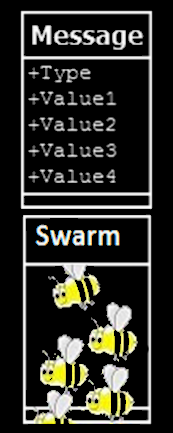

Abstraction build over asynchronous messages….
- Yes, you can repeat this but it is not very useful.
- You put your APIs (functions, calls to web services, basic building blocks of logic,etc) in nodes and
you compose all these in a special language that get executed by jumping (swarming) from node to node.
Still.. nothing?
What is a "swarm" ?

- It is a message
- It is better because the swarm is "swarming" . Obviously.
Bees are swarming from their hive in a forest, what the heck can be similar for messages?
- When sending a message,we can pretend that the process (the one that is sending that message) is like a hive in a tree? Right? And the message will arrive in another process (node), another tree, isn't it?
- But.. to do something meaningful, you don't send only a message, sometimes a lot of messages are sent between many processes. You can unifying all that confusing behaviour as a swarming process where the initial swarm (message) is moving from tree to tree (processes) and eventually the swarm get divided and is joining again when searching for food or for a new home.
Do the swarm have a plan?
- I can't read bees mind, but we can imagine that any swarming happens to follow some PHASES
- Message swarming have a "swarming description", a file where what will happen with a new swarm is carefully
planned.
A swarming description contains variables (the bees :) ) , ctors (constructors, initialisation phase) and descriptions for all phases.
Dude,where is the honey?
- It is in hives, of course.
- Well, for SwarmESB based systems, the honey is carried by bees (variables) but can be also stored and collected from
trees (nodes,process) visited by swarms.
The nodes (trees) offer to swarms some honey as APIs
Why is called swarming?
- Because we like organic metaphors
- Because jumping from node to node (using the network) of a set of values can be seen as sending messages
but can be also seen as a swarming of some mysterious bees that care the honey (values) . After a swarm reaches
a node, it can swarm again and again and you can describe and understand all the related swarming activities.
What can be cooler than this?
Ok,I got it, show me some code
It is not somehow similar to SOA?
- Yes it is. It is trying to solve similar concerns and actually it can work well in a SOA environment.
- SOA requires some sort of ESBs and with SwarmESB we are targeting the orchestration and loose coupling issues that ESBs are trying to address.